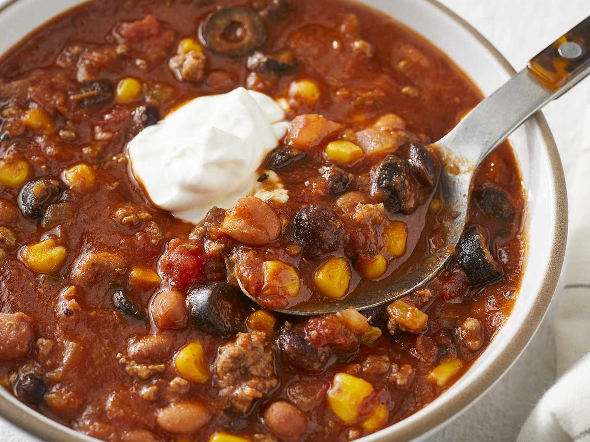

Taco Soup

Taco soup is a quick and easy meal for on the go families. Taco soup is easy to make and delicous to eat!
- Gather ingredients:
- Brown ground beef in skillet and drain grease.
- Add ingredients together in a pot except for cheese.
- Strain corn, pinto beans, black beans, and kidney beans before adding.
- Add two cans of water from empty corn can.
- Cook on medium for 30 minutes.
- Place in bowl and add Shredded cheese.
- Enjoy!